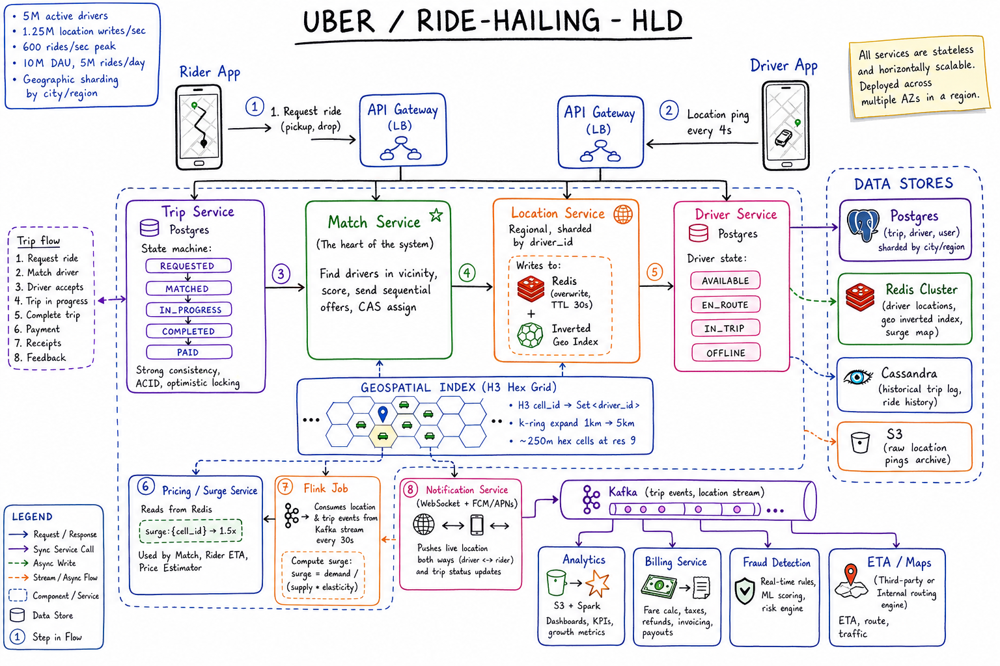
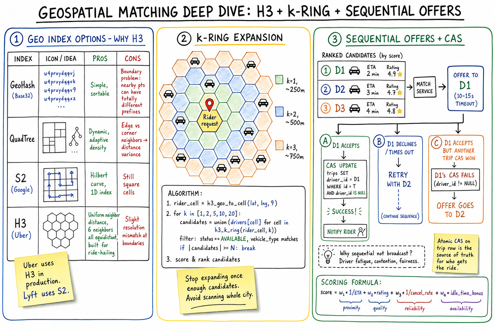
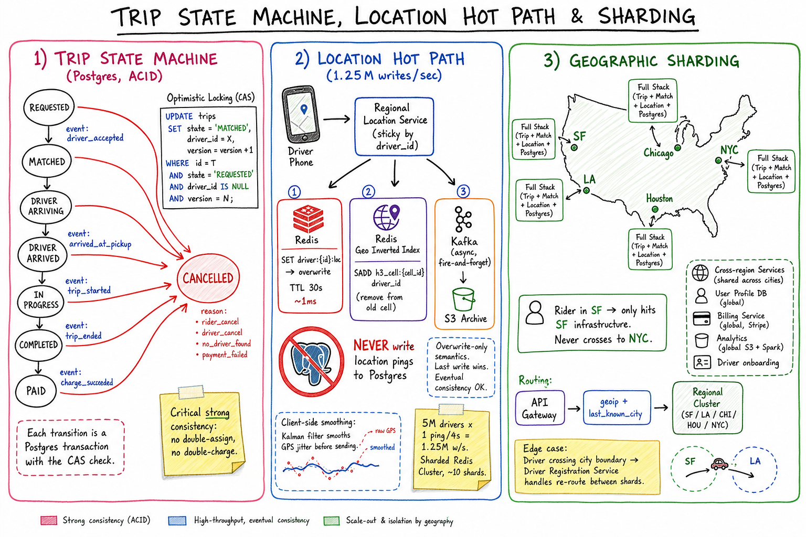

Uber / Ride-Hailing // HLD
Realtime matching of riders to nearby drivers: H3 hexagonal geo index, 1.25M location pings/sec to Redis (never Postgres), sequential offer + CAS assignment, ACID trip state machine, regional sharding, surge pricing via Flink.

Whiteboard HLD: rider & driver apps go through API Gateways to regional services. Trip Service owns ACID state machine in Postgres; Match Service uses H3 geo index to find candidates and sends sequential offers with CAS assignment. Location Service handles 1.25M pings/sec into Redis (overwrite + inverted geo index) — never Postgres. Flink computes surge from Kafka. Notification Service pushes live location both ways over WebSocket. Geographic sharding (one full stack per city/region).
01 — Requirements
Functional
- Rider requests a ride with pickup + drop locations
- System matches with a nearby available driver (within ~5km, ETA-optimized)
- Both see live location of each other (real-time tracking)
- Pricing: surge during high demand, base + distance + time
- Trip lifecycle: requested → matched → in-progress → completed → paid
- Cancel by either side; rate after trip; payment
Non-Functional
- Low latency match: < 2s p99 to find a driver
- High throughput: 10K+ matches/sec globally
- Strong consistency on trip state (no double-assignment, no double-charge)
- Eventual consistency OK for location pings (last write wins)
- Highly available: 99.99%; trip must complete even if some services down
- Geo-aware: route to regional services, low-latency to drivers/riders
02 — Estimation
Users: 100M MAU -> 10M DAU -> ~5M rides/day Rides/sec average: ~60/s Rides/sec peak (10x): ~600/s Active drivers: 5M Location ping interval: every 4s per driver Location writes/sec: 5M / 4 = 1.25M/sec <-- the big number Location storage: 1.25M x 50 bytes x 86400s ~= 5 TB/day raw Kept hot ~1 day in Redis; archived to S3 Read load: ~100K QPS aggregate (rider polling, surge, ETA) Geographic sharding: ~500 city/region shards globally Avg 10K active drivers/city, 200 hot cities
03 — Why It's Hard
- Spatial search across 5M drivers in <100ms (no Postgres B-tree will save you)
- Write tsunami: 1.25M location pings/sec sustained, peaks 2-3×
- Strong consistency on trip assignment (CAP-wise, this is CP for trips)
- Eventual consistency for location (CAP-wise, AP) — two consistency regimes in one product
- Race conditions: two riders → same driver, two drivers → same offer
- Mobile networks: drivers/riders in tunnels, bad GPS, dropped connections mid-trip
- Surge feedback loop: increase price → supply moves → demand drops → must re-compute without oscillation
04 — Architecture
Rider App Driver App
| |
v v
API Gateway (LB, geoip routing) API Gateway (LB)
| |
v v
+-------------+ +--------------+ +------------------+ +----------------+
| Trip Service| | Match Service| | Location Service | | Driver Service |
| (Postgres, | | (H3 + offers | | (Redis + Kafka) | | (Postgres) |
| ACID, |<-+ + CAS) |-->| 1.25M w/s | | driver state |
| state mach)| +--------------+ +------------------+ +----------------+
+-------------+ | |
| v v
| +-------------------------------------+
| | Geo Index (H3 hex, Redis inverted) |
| | cell_id -> Set<driver_id> |
| +-------------------------------------+
v
+--------------+ +--------------+ +-------------+
| Notification | | Pricing / | | Flink job |
| (WS, FCM) | | Surge |<-+ supply/dem |
+--------------+ +--------------+ +-------------+
|
v
Kafka (trip events) -> Analytics, Billing, Fraud, Maps/ETA

Zoom-in: geo index choice (H3 wins over GeoHash/QuadTree/S2 because hexagons have uniform-distance neighbors), k-ring expansion algorithm (start with k=1 ~250m, expand until enough candidates), sequential offers ranked by score = w1/ETA + w2*rating + w3/cancel_rate + w4*idle_time. Atomic CAS on the trip row is the source of truth for who wins a contended driver.
05 — Geo Index (Why H3)
| Approach | How | Pros | Cons |
|---|---|---|---|
SQL WHERE lat… AND lng… | B-tree on lat, scan on lng | Simple | Dies past ~100K rows; no real 2D index |
| GeoHash | Base-32 encoding of (lat, lng) interleaved bits; nearby = shared prefix | Sortable, simple | Boundary problem: nearby points across cell border have totally different prefixes |
| QuadTree | Recursive 4-quadrant subdivision until each cell has ≤ K objects | Adaptive density | Edge vs corner neighbors → distance variance |
| S2 (Google) | Hilbert curve maps 2D → 1D; 64-bit cell IDs | Compact, range queries | Still square cells; Lyft uses this |
| H3 (Uber) | Hexagonal hierarchical index; 16 resolution levels | Uniform neighbor distance, 6 equidistant neighbors | Slight resolution mismatch at boundaries |
H3 wins for ride-hailing. Hexagons have only one type of neighbor (squares have edge + corner = 2 types, giving distortion). Built by Uber for exactly this use case.
How it works in practice
- Map divided into ~250m H3 cells at resolution 9
- Each driver's location → H3 cell ID (deterministic O(1))
- Inverted index in Redis:
h3:{cell_id} → Set<driver_id> - Query: rider location →
h3_geo_to_cell→h3_k_ring(cell, k)→ union of driver sets
06 — Location Hot Path (1.25M w/s)
The hardest scaling problem in Uber. 5M drivers × 1 ping/4s = 1.25M writes/sec sustained. No DB can take this; the trick is to never persist to a DB.
driver_id → same server holds same driver's recent state (helps cache).SET driver:{id}:loc = (lat,lng,ts) with TTL 30s. ~1ms. Last write wins.SREM h3:{old_cell}, SADD h3:{new_cell}. Most pings stay in same cell → no-op.driver-locations topic. Kafka → S3 archive for historical trail. Never blocks the ping.NEVER write location pings to Postgres. Overwrite-only semantics in Redis; the historical trail lives in S3. Eventual consistency is fine for "where is the car right now".
Client-side smoothing
Driver phones use a Kalman filter to smooth raw GPS jitter before sending. Reduces backend noise and prevents the marker from "jumping" on rider's screen.
07 — Matching Algorithm
Find candidates (k-ring expansion)
rider_cell = h3_geo_to_cell(rider_lat, rider_lng, 9)
for k in [1, 2, 5, 10, 20]:
cells = h3_k_ring(rider_cell, k)
candidates = union(redis.smembers("h3:" + c) for c in cells)
candidates = filter(status==AVAILABLE, vehicle_type matches, not blacklisted)
if len(candidates) >= N: break
Score & rank
score = w1 * (1 / ETA_to_pickup) # proximity
+ w2 * rating # quality
+ w3 * (1 / cancel_rate) # reliability
+ w4 * idle_time_bonus # availability/fairness
Sequential offers + CAS
- Send offer to top-1 driver with 10-15s timeout
- On accept:
UPDATE trips SET driver_id=X, state='MATCHED' WHERE id=T AND driver_id IS NULL - If CAS fails (another trip got the driver) → move to next driver
- If declined/timeout → move to next driver
Why sequential, not broadcast? Broadcasting causes driver fatigue (offers piling up on screen) and contention (everyone fighting for the same driver). Sequential offers give the closest driver first-look right and is much fairer.

Zoom-in: trip state machine (REQUESTED → MATCHED → ARRIVING → ARRIVED → IN_PROGRESS → COMPLETED → PAID) with optimistic-locking CAS at every transition; location hot path with parallel writes to Redis (overwrite, TTL 30s) + Redis geo inverted index + Kafka (async to S3) but never Postgres; geographic sharding so a rider in SF only hits SF infrastructure, with cross-region services limited to user profile, billing, and analytics.
08 — Trip State Machine
REQUESTED -> MATCHED -> DRIVER_ARRIVING -> DRIVER_ARRIVED
-> IN_PROGRESS -> COMPLETED -> PAID
any state -> CANCELLED (reason: rider_cancel, driver_cancel,
no_driver_found, payment_failed)
Optimistic locking (CAS) at every transition
UPDATE trips
SET state = 'MATCHED', driver_id = X, version = version + 1
WHERE id = T
AND state = 'REQUESTED'
AND driver_id IS NULL
AND version = N;
-- if rows_affected = 0, retry / fail with conflict
- Postgres (ACID) is the source of truth for trip state
- Every transition is a transaction with CAS check on
(state, version) - No "eventually consistent" allowed here — double-assigning a driver or charging twice is catastrophic
09 — Real-Time Tracking
Both apps hold a WebSocket to the Notification Service. When a trip is active:
- Driver pings Location Service every 4s
- Location Service publishes to Kafka topic
driver-location-{driver_id} - Notification Service subscribes to that topic only while the trip is active (lazy subscription, saves resources)
- Pushes location updates to rider's WebSocket
- Same the other way (rider's location pushed to driver, so driver can find them at pickup)
Polling fallback: if WebSocket fails, app polls GET /trip/{id}/location every 5s. Higher latency but works on flaky networks.
10 — Surge Pricing
Computation (Flink streaming job)
Window every 30s, per H3 cell:
supply = count of AVAILABLE drivers in cell
demand = count of ride requests in last 30s
surge_raw = max(1.0, demand / (supply * elasticity))
surge_smooth = EMA(0.7) over last 5 windows // prevent oscillation
surge_capped = min(surge_smooth, 5.0) // safety cap
Write to Redis: surge:{cell_id} -> 1.5x (TTL 60s)
Read path
- Pricing Service reads
surge:{cell_id}on every ride quote - If Redis is stale/down: fall back to last-known value or
1.0x - Total fare = (base + per_mile * miles + per_min * minutes) × surge
Smoothing matters. Without EMA, surge oscillates wildly (price goes up → demand drops → price drops → demand returns → price up). EMA over a few windows damps the loop.
11 — Payment & ETA
Payment (async, post-trip)
- On COMPLETED → emit
trip.completedevent to Kafka - Billing Service consumes event, computes final fare, charges card via Stripe
- Idempotency key =
trip_id(no double-charge on retry) - On charge success → transition trip to PAID, notify both parties
- On failure → retry with exponential backoff (1m, 5m, 30m); after N retries, mark as outstanding balance
ETA
- Driver → pickup: precomputed shortest path with current traffic, or Google Maps API (cached)
- Pickup → drop: same engine, also fed into pricing (per-mile + per-minute)
- Uber uses its own routing engine (OSRM/Valhalla + ML traffic predictions). Mortals can use Google Maps / Mapbox
12 — Scaling
- Geographic sharding is the killer move. Each city/region has its own Trip, Match, Location, Surge services + Postgres. SF rides never interact with NYC rides.
- Cross-region only for: user/driver profile, billing, analytics, driver onboarding
- Redis Cluster: driver locations sharded by
driver_id; geo inverted index sharded byh3_cell(different cluster recommended) - Postgres: sharded by
city_idwithin a region; read replicas for trip history - Kafka: per-region cluster for trip events & location stream; partitioned by driver_id / trip_id
- Stateless services (Trip, Match, Pricing) behind LB — horizontal scale
- API Gateway routing: geoip + last-known city → pick regional cluster
13 — Edge Cases
- Driver goes offline mid-trip → trip stays IN_PROGRESS; rider notified; retry WS; after 60s, fall back to phone
- Rider in tunnel / bad GPS → client Kalman smoothing; server tolerates stale pings up to 30s
- Two riders race for same driver → atomic CAS on trip row; loser retries with next-best driver
- Driver accepts then cancels → cancel penalty; rebroadcast offer to next-best; ETA recomputed for rider
- Surge during Flink outage → serve last-known surge from Redis; if very stale, default to 1.0x; surface "surge unavailable" UI
- Payment fails → trip still completes (rider not stuck); debt tracked; rider blocked from new rides until cleared
- Driver crosses city boundary → Driver Registration Service re-routes them to new regional shard; in-flight trip stays with original region until done
- Postgres regional outage → read-only mode; in-progress trips continue (state cached in Match Service); new requests rejected with retry; failover to hot standby
- Massive event (concert ends) → demand spike in one cell; surge climbs; pre-stage drivers via heatmap; rider sees "high demand, wait or pool"
14 — Real-World Equivalents
| Company | Notes |
|---|---|
| Uber | H3 hex index (open-sourced); custom routing engine; Schemaless on top of MySQL; Cassandra for trip log |
| Lyft | S2 cells; PostgreSQL + DynamoDB; AWS Kinesis instead of Kafka |
| DoorDash / UberEats | Same core matching but with restaurant readiness as extra constraint; multi-stop routes |
| Ola / Grab / Didi | Same architecture; regional differences in payment (cash-heavy) and dispatch (auto-acceptance) |
| Amazon Logistics / FedEx routing | Same VRP class but offline batch optimization rather than realtime single-trip matching |
15 — Interview Q&A
How do you find nearby drivers in <100ms among 5M?
Why H3 over GeoHash or QuadTree?
How do you handle 1.25M location updates per second?
driver:{id}:loc in Redis (TTL 30s) and updates the inverted geo index only if the H3 cell changed. Async fire-and-forget to Kafka → S3 for the historical trail. Postgres never sees a location ping — only trip state lives there.Two riders request the closest driver at the same time — who wins?
UPDATE trips SET driver_id=X WHERE id=T AND driver_id IS NULL. Whoever's UPDATE commits first wins. The other rider's match retries with the next-best driver. Postgres's row lock + ACID guarantees there's no double-assignment.Strong vs eventual consistency — where do you draw the line?
How does surge pricing get computed?
surge = max(1.0, demand / (supply * elasticity)). Smoothed via EMA over last 5 windows to prevent oscillation. Capped at 5x. Cached in Redis with 60s TTL. Pricing Service reads on every ride quote. Falls back to last-known or 1.0x if Redis unavailable.